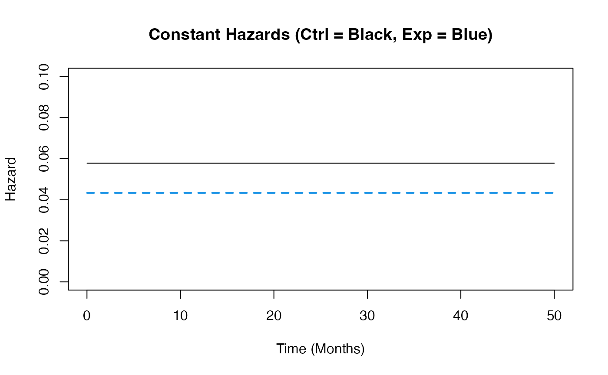
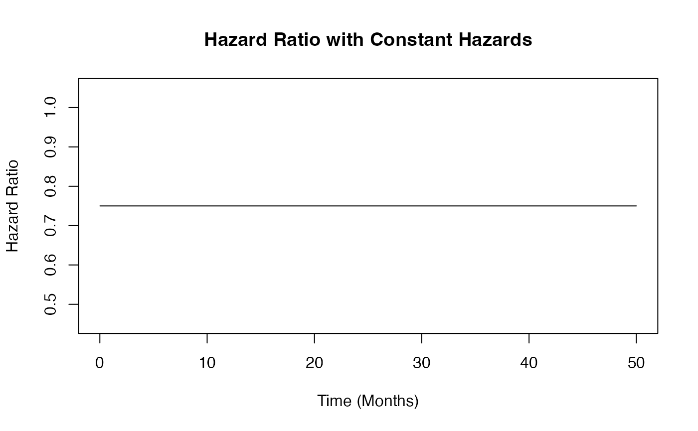
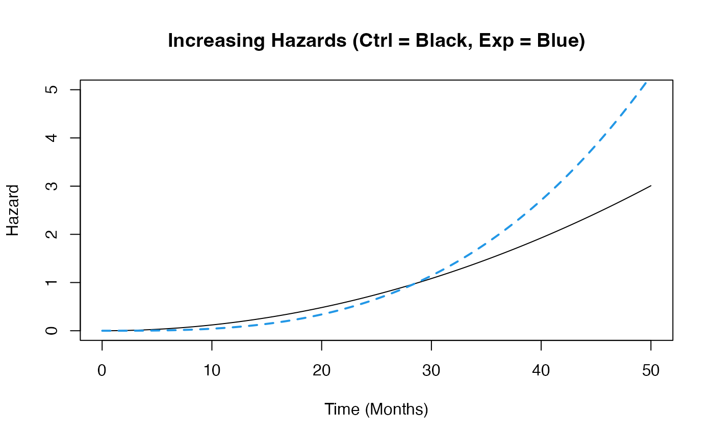

2 Arm Time-To-Event Outcome Patient Simulation
Valeria A. G. Mazzanti, J. Kyle Wathen
July 16, 2024
2ArmTimeToEventOutcomePatientSimulationDescription.RmdTwo Arm, Time-To-Event Outcome - Patient Outcome Simulation Examples
The following examples demonstrate how to add new patient outcome simulation capabilities into East using an R function in the context of a two-arm trial with a time-to-event patient outcome. For all examples, we assume the trial design consists of standard of care and an experimental treatment and the trial design assumes patient outcomes are normally distributed.
East Workbook: 2ArmTimeToEventOutcomePatientSimulation.cywx
R Studio Project File: 2ArmTimeToEventOutcomePatientSimulation.Rproj.
In the RCode directory of this example you will find the following R files:
SimulatePatientSurvivalWeibull.R - This file provides an example R function to simulate patient time-to-event data from a Weibull distribution.
SimulatePatientSurvivalMixtureExponential.R - This file provides an example R function to simulate patient data from a mixture of exponential distributions. The mixture is based on having any number of patient groups in the study where each group has a different Exponential distribution for simulating the time-to-event from.
In addition, if you would like to experiment with these examples to and would like some code to help you get started, we have provided fill-in-the-blank type code files in the FillInTheBlankRCode directory.
Example 1 - Simulation of Patient Time-To-Event Data from a Weibull Distribution
In this example, an R function is provided to help explore how to simulate patient data that follows a pattern where hazards and hazard ratio are changing over time and the impact on expected study power.
To replace the patient outcome simulation, the function used is SimulatePatientSurvivalWeibull and can be found in RCode/SimulatePatientSurvivalWeibull.R. The required User Specified parameters are the shape and scale for each arm’s distribution, specifically, dShapeCtrl, dShapeExp, dScaleCtrl, and dScaleExp.
- Example 1.1 – Assume that the difference in risk of death for patients in the control arm compared to the risk of death for patients in the experimental arm remains the same over time. The time to death or progression of patients is simulated from a Weibull distribution with the shape and scale for each arm provided in East and sent to R. For this example, the required parameters are the shape and scale for each arm, specifically, dShapeCtrl = 1.0, dShapeExp = 1.0, dScaleCtrl = 17.31, and dScaleExp = 23.08. The Scale parameters are computed based on the median Survival time for each arm. This example is included to demonstrate using an R function if the data is simulated as it is in East without the use of an R function.

- Example 1.2 – This function assumes that the hazard of death or progression is increasing over time for both arms. The control arm’s hazards, however, increase at a slower rate than the experimental arm’s hazards. The time to death or progression of patients is simulated from a Weibull distribution with the shape and scale for each arm provided in East and sent to R. For this example, the required parameters are the shape and scale for each arm, specifically, dShapeCtrl = 3.0, dShapeExp = 4.0, dScaleCtrl = 13.56, and dScaleExp = 17.54. This example is included to demonstrate using an R function if the data is simulated differently to how it is in East without the use of an R function.

- Example 1.3 – This example is similar to the previous example,
however, this function assumes that both the arms’ hazards are
decreasing over time. The control arm’s hazards decrease at a slower
rate than the experimental arm’s hazards. The time to death or
progression of patients is simulated from a Weibull distribution with
the shape and scale for each arm provided in East and sent to R. For
this example, the required parameters are the shape and scale for each
arm, specifically, dShapeCtrl = 0.7, dShapeExp = 0.8, dScaleCtrl =
20.26, and dScaleExp = 25.30. This example is included to demonstrate
using an R function if the data is simulated differently to how it is in
East without the use of an R function.

Example 2 - Simulation of Patient Time-To-Event Data from a Mixture of Distributions
Simulate patient data from a mixture of exponential distributions. The mixture is based on having any number of patient subgroups in the study where each group has a different Exponential distribution for simulating the time-to-event (TTE) from. In the East workbook, four simulations are conducted. The simulations are: 1. both subgroups have the same HR=0.75 with same median TTE, eg subgroup has no impact, 2. 25% of patients are in subgroup 1, with a median TTE lower than in group 2 and both subgroups have a HR = 0.75, 3. 25% of patients are in subgroup 1 with an HR = 0.8 and subgroup 2 has a HR = 0.75, 4. 40% of patients are in subgroup 1 with an HR = 0.8 and subgroup 2 has a HR = 0.75.
The intent of the example is to illustrate the impact of the patient subgroup may have on the operating characteristics of the design.
Notes about the Exponential and Weibull Distributions
In R the Weibull distribution has a shape parameter \(\alpha\) and scale parameter, \(\sigma\) and has a density given by
\[ f(x) = \frac{\alpha}{\sigma}\left(\frac{x}{\sigma}\right)^{\alpha-1} e^{-\left(\frac{x}{\sigma}\right)^\alpha} \]
The hazard function is \[ h(x) = \frac{\alpha}{\sigma}\left( \frac{x}{\sigma}\right)^{\alpha-1} \]
In R, an Exponential distribution has a rate parameter, \(\lambda\) and has density given by
\[ f(x) = \lambda e^{-\lambda x} \] The hazard function is constant \[ h(x) = \lambda \] The Exponential distribution is a special case of the Weibull and can be obtained by setting the shape parameter, \(\alpha=1\), and scale parameter, \(\sigma = \frac{1}{\lambda}\). Functions to help with computation of Weibull parameters are found in HelperFunctionsWeibull.R